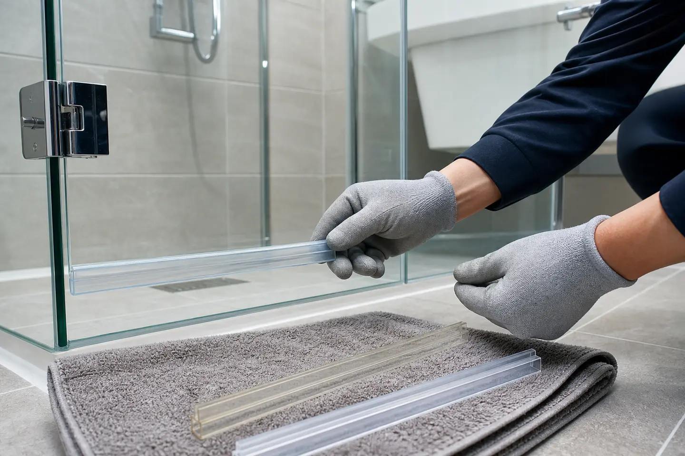

화장실문에 스토퍼가 망가져서 교체해야 한다구요?? 다운라이트 매립등 교체해야 한다구요?? 스토퍼설치 매립등교체 두가지 작업 한번에 해주는 곳을 찾고계시다구요~!??
이번 작업의 확인 포인트
누수 흔적과 물막이, 실리콘, 도어 부속 상태를 확인하고 물이 흐르는 방향에 맞춰 필요한 부분을 교체하거나 보강합니다.

화장실문에
스토퍼가 망가져서
교체해야 한다구요??
다운라이트
매립등
교체해야 한다구요??
스토퍼설치
매립등교체
두가지 작업
한번에 해주는
곳을 찾고계시다구요~!??
바로바로~!!
스토퍼재설치매립등교체
수리수리 수리남
집수리 전문마법사
<수리남홈케어>
에게 맡기시면됩니다~!!
스토퍼고무 충격방지스토퍼
스토퍼설치 문충격방지스토퍼
다운라이트조명 다운라이트교체
거실다운라이트 LED다운라이트
매립등가격 거실매립등교체
주방매립등교체 천장매립등교체
욕실매립등교체 LED매립등교체
스토퍼재설치매립등교체

1. 작업인원: 1명
2. 작업시간: 1시간
3. 작업위치: 서울시 서초구
4. 작업내용: 스토퍼재설치&매립등교체
안녕하세요
저희가 이사온 집에
화장실문 충격방지 스토퍼가
고장이나서 안되고
매립등도 안들어와서
교체하고 싶은데
가능할까요??
고객님
그럼요~ 고객님~!!
<수리남홈케어>가
스토퍼재설치매립등교체
해결해드리겠습니다!!
오늘은
스토퍼설치매립등교체
작업의뢰를 받고
서울시 서초구로
출동합니다~!!
GOGO~~


1. 현장확인
현장에 도착하여 확인해보니
고객님말씀처럼
화장실문 스토퍼재설치
천장에 매립등교체
작업이 필요해보입니다~
화장실 문 스토퍼설치는
어디로 의뢰해야할까요?
매립등교체는
어디로 의뢰해야할까요??
관리사무소에
문의해봐도
업체에 맡겨야 한다고하고
욕실전문수리업체
+전기설비전문업체
따로따로 작업의뢰하려니
기본적인 출장비용이
이중부담이 되고
인테리어전문업체에
맡기려니 작업이 바로 어렵다며
비용도 비싸게 부르곤하죠!!
그럴 때!!!
집수리전문가
<수리남홈케어>에게
문의주세요~~!!
간단한 교체작업도!!
전문적인 수리작업도!!
철거작업 및 보수작업도!!
<수리남홈케어>가
처음부터 끝까지
한번에 해결해드립니다~!
2. 설치 및 교체작업
자~!! 그럼 본격적으로
스토퍼재설치매립등교체
작업을 시작해볼까요??
가장먼저~!!
매립등을 준비해줍니다
들어오고 안들오는 곳이 있어
전체 교체하기로 하였고~


다운라이트
확산형 LED매립등입니다
광원이 직접보이지 않고
눈부심이 적습니다
빛이 넓게 펴지기때문에
넓은 면적의 공간에서
사용하기 적합한 제품입니다~!
화장실문스토퍼의 경우에는
타일벽에 부딪히는 부분이
스프링이 빠져
제 역할을 못하고 있었습니다
새 스토퍼고 교체해주면
간단히 해결!!!!
3. 작업완료
짠~!! 어떤가요??
고객님께서 의뢰해주신대로
스토퍼재설치매립등교체
작업을 완료하였습니다~!!
스토퍼재설치 완료

매립등교체완료
작업 후
지저분해진 주변정리도
말끔하게 완료하였습니다~!!
와~!!
화장실 문을 열때마다
타일에 부딪혀서
타일이 깨질까봐
조마조마 했었거든요
문의드리자마자 빨리오셔서
교체해주시니 고맙습니다
매립등도 환하게
잘 들어와서 좋아요
아직 손 볼 곳이
이곳저곳 많은데
시간될 때
한꺼번에 의뢰드리고 싶네요
감사합니다
출장가능지역
수원 분당 용인 광주 판교 동탄 오산
잠실 서초 용산 동작 청라 은평 구로
마포 홍대 합정 신천 천안 아산 당산
서울 경기 전지역 가능합니다


작업중에는 현장소음으로
전화연결이 어렵습니다
아래내용을 문자로 보내주시면
작업이 끝나고 전화드립니다
1. 지역
2. 현장사진
3. 작업요청내용
지금까지<수리남홈케어>
스토퍼설치매립등교체 현장
글을 읽어주셔서 감사합니다
우리 고객님들께
'만족'을 선물해드릴 수 있는
<수리남홈케어>되기위해
오늘도 최선을 다하겠습니다